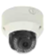

POC PRODUCTS & SOLUTIONS
- Full HD PoC Camera Series
- STARVIS Full HD PoC Camera Series
- 4MP PoC Camera Series
(for DC VF/MFZ LENs) - 4MP PoC Camera Series
(for fixed lens) - STARVIS QHD 4MP PoC Camera Series
- IPU Series Overview
STARVIS QHD 4MP PoC Camera Series
STARVIS QHD 4MP PoC Camera Series
MAIN FEATURES
- STARVIS QHD Sony One Cable Lineup,
- Universal HD analogue Support (AHD/TVI/CVI/SD Video),
- Digital WDR (Wide Dynamic Range), Sens-up, 2/3 DNR, Smart IR
- Full OSD operation via on-board UTC (Up to Coax),
- Secondary Video Output, JPN OSD Menu support,
- Dual Power Cable Support (one is for VP Camera, second is for DC 12V Power)
- Transmission distance: ~400m on 5C coaxial cable (TBD)
| MODEL NUMBER | HBX-QH304-TN(P) | HBX-QH3D204-TN(P) | HID-QH3D204-TN(P) | HVD-QH3D204-24TN(P) | HVD-QH3D204-32TN(P) | HIR-QH3D204-42TN(P) |
|---|---|---|---|---|---|---|
| Image |  |
 |
 |  |
||
| Image Sensor | 1/2.7" 5Mega-Pixel CMOS sensor | 1/2.7" 5Mega-Pixel CMOS sensor | 1/2.7" 5Mega-Pixel CMOS sensor | 1/2.7" 5Mega-Pixel CMOS sensor | 1/2.7" 5Mega-Pixel CMOS sensor | 1/2.7" 5Mega-Pixel CMOS sensor |
| Total Pixels | 2720H) X 1976(V) : 5.3M(pixel) | 2720H) X 1976(V) : 5.3M(pixel) | 2720H) X 1976(V) : 5.3M(pixel) | 2720H) X 1976(V) : 5.3M(pixel) | 2720H) X 1976(V) : 5.3M(pixel) | 2720H) X 1976(V) : 5.3M(pixel) |
| Effective Pixels | 2688(H) X 1944(V) :5.2M(pixel) | 2688(H) X 1944(V) :5.2M(pixel) | 2688(H) X 1944(V) :5.2M(pixel) | 2688(H) X 1944(V) :5.2M(pixel) | 2688(H) X 1944(V) :5.2M(pixel) | 2688(H) X 1944(V) :5.2M(pixel) |
| Resolution | 2560 x1440 (30fps@1440p) | 2560 x1440 (30fps@1440p) | 2560 x1440 (30fps@1440p) | 2560 x1440 (30fps@1440p) | 2560 x1440 (30fps@1440p) | 2560 x1440 (30fps@1440p) |
| Min. Illumination | More than 0.03 lux(DSS off) Max GAIN 48dB | More than 0.03 lux(DSS off) Max GAIN 48dB | More than 0.03 lux(DSS off) Max GAIN 48dB | More than 0.03 lux(DSS off) Max GAIN 48dB | More than 0.03 lux(DSS off) Max GAIN 48dB | More than 0.03 lux(DSS off) Max GAIN 48dB |
| LENS | N.A | f=2.8-12mm F1.4 DC Drive IRIS | f=2.8-12mm F1.4 DC Drive IRIS | f=2.8-12mm F1.4 DC Drive IRIS | f=2.8-12mm F1.4 DC Drive IRIS | f=2.8-12mm F1.4 DC Drive IRIS |
| Motorized vari-focal lens | N.A | O | O | O | O | O |
| Video Output | AHD, HD-TVI/CVI Selectable CVBS(NTSC, PAL) | AHD, HD-TVI/CVI Selectable CVBS(NTSC, PAL) | AHD, HD-TVI/CVI Selectable CVBS(NTSC, PAL) | AHD, HD-TVI/CVI Selectable CVBS(NTSC, PAL) | AHD, HD-TVI/CVI Selectable CVBS(NTSC, PAL) | AHD, HD-TVI/CVI Selectable CVBS(NTSC, PAL) |
| IR LEDs | No | No | No | 24pcs IR LEDs | 32pcs IR LEDs | 42pcs IR LEDs |
| Day & Night | AUTO, COLOR, B&W, EXT | AUTO, COLOR, B&W, EXT | AUTO, COLOR, B&W, EXT | AUTO, COLOR, B&W, EXT | AUTO, COLOR, B&W, EXT | AUTO, COLOR, B&W, EXT |
| True D/N(ICR) | O | O | O | O | O | O |
| iMotion Event Digitial Zoom | N/A | N/A | N/A | N/A | N/A | N/A |
| UTC | O | O | O | O | O | O |
| External Adjustment | N/A | N/A | N/A | N/A | N/A | N/A |
| Motion Detection | 4 Programmable Zone | 4 Programmable Zone | 4 Programmable Zone | 4 Programmable Zone | 4 Programmable Zone | 4 Programmable Zone |
| D-ZOOM | N/A | N/A | N/A | N/A | N/A | N/A |
| OSD Language | ENG, JPN, CHN1(Simplified),CHN2(Traditional), GER, FRA,ITA, SPA, POL, RUS, POR, NED,TUR, KOR,HEB, ARB | ENG, JPN, CHN1(Simplified),CHN2(Traditional), GER, FRA,ITA, SPA, POL, RUS, POR, NED,TUR, KOR,HEB, ARB | ENG, JPN, CHN1(Simplified),CHN2(Traditional), GER, FRA,ITA, SPA, POL, RUS, POR, NED,TUR, KOR,HEB, ARB | ENG, JPN, CHN1(Simplified),CHN2(Traditional), GER, FRA,ITA, SPA, POL, RUS, POR, NED,TUR, KOR,HEB, ARB | ENG, JPN, CHN1(Simplified),CHN2(Traditional), GER, FRA,ITA, SPA, POL, RUS, POR, NED,TUR, KOR,HEB, ARB | ENG, JPN, CHN1(Simplified),CHN2(Traditional), GER, FRA,ITA, SPA, POL, RUS, POR, NED,TUR, KOR,HEB, ARB |
| Water proof | N.A | N.A | N.A | IP66 LEVEL | IP66 LEVEL | IP66 |
| Power | Poc or DC 12V | Poc or DC 12V | Poc or DC 12V | Poc or DC 12V | Poc or DC 12V | Poc or DC 12V |
| Operation Environment | -10˚C~+50˚C / 10%~90% RH, Non-condensing | -10˚C~+50˚C / 10%~90% RH, Non-condensing | -10˚C~+50˚C / 10%~90% RH, Non-condensing | -10˚C~+50˚C / 10%~90% RH, Non-condensing | -10˚C~+50˚C / 10%~90% RH, Non-condensing | -10˚C~+50˚C / 10%~90% RH, Non-condensing |
| Dimension (mm) | 70(W) x 58(H) x 113(D)mm | 75(W)x60(H)x154(D)mm | 90(Ø)x134(W)x97.5(H)mm | 90(Ø)x133(W)x100.3(H)mm | 100(Ø)x154.2(W)x143(H) mm | 80(W)x249.5(D)x79.3(H)mm |
| G.Weight | 350g | 530g | T.B.D | 540g | 1,215g | 610g |
| Optional Model (MFZ LENs) | N/A | HBX-QH2T204-TN(P) | HID-QH2T204-TN(P) | HVD-QH2T204-24TN(P) | HVD-QH2T204-32TN(P) | HIR-QH2T204-42TN(P) |
| MP STATUS |